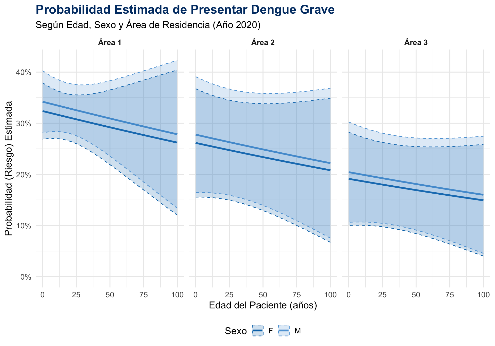
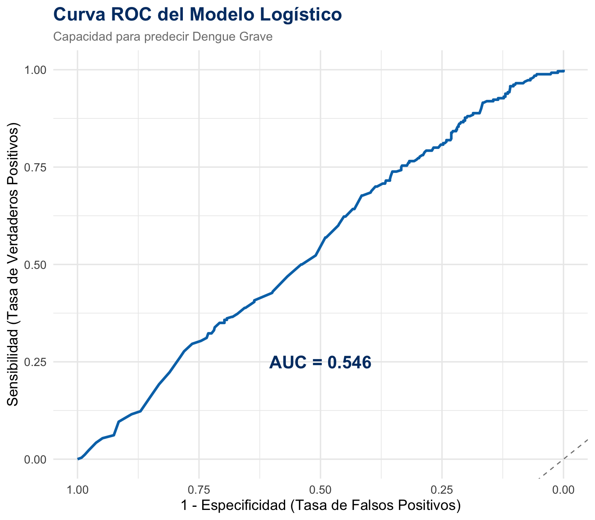

| Variable | F (Referencia) | M |
|---|---|---|
| SEXO | 0 | 1 |
| 0 | 0 |
| Variable | 1 (Referencia) | 2 | 3 |
|---|---|---|---|
| AREA | 0 | 0 | 0 |
| 0 | 1 | 0 | |
| 0 | 0 | 1 |
Se presenta la formulación matemática del modelo logístico estimado.
\[ \beta = (\beta_{0}, \beta_{EDAD}, \beta_{Sexo\_M}, \beta_{Area\_2}, \beta_{Area\_3})^{T} \]
y su estimador:
\[ \hat{\beta} = (\hat{\beta}_{0}, \hat{\beta}_{EDAD}, \hat{\beta}_{Sexo\_M}, \hat{\beta}_{Area\_2}, \hat{\beta}_{Area\_3})^{T} \] B) Matemáticamente, ¿Cuál es la probabilidad estimada de que un individuo pertenezca al grupo de “Dengue Grave” dado su edad, sexo y área de residencia?
\[ \hat{p}_{i} = P(DengueGrave = 1 \mid EDAD_{i}, SEXO_{i}, AREA_{i}) \] Donde:
| Variable | F (Referencia) | M |
|---|---|---|
| SEXO | 0 | 1 |
| 0 | 0 |
| Variable | 1 (Referencia) | 2 | 3 |
|---|---|---|---|
| AREA | 0 | 0 | 0 |
| 0 | 1 | 0 | |
| 0 | 0 | 1 |
Primero, definimos la combinación lineal de las variables para un individeuo \(i\)
\[\text{logit}(\hat{p}_{i}) = \hat{\beta}_{0} + \hat{\beta}_{1}(EDAD_{i}) + \hat{\beta}_{2}(Sexo\_M_{i}) + \hat{\beta}_{3}(Area\_2_{i}) + \hat{\beta}_{4}(Area\_3_{i})\] El modelo estimado estimado se puede escribir teniendo en cuenta la ecuación del logit o la de la probabilidad:
\[ \text{logit}(\hat{p}_{i}) := \ln \left( \frac{\hat{p}_{i}}{1 - \hat{p}_{i}} \right) = \hat{\beta}_{0} + \hat{\beta}_{1}(EDAD_{i}) + \hat{\beta}_{2}(Sexo\_M_{i}) + \hat{\beta}_{3}(Area\_2_{i}) + \hat{\beta}_{4}(Area\_3_{i})\]
\[ \hat{p}_{i} = \frac{e^{\hat{\beta}_{0} + \hat{\beta}_{1}(EDAD_{i}) + \hat{\beta}_{2}(Sexo\_M_{i}) + \hat{\beta}_{3}(Area\_2_{i}) + \hat{\beta}_{4}(Area\_3_{i})}} {1 + e^{\hat{\beta}_{0} + \hat{\beta}_{1}(EDAD_{i}) + \hat{\beta}_{2}(Sexo\_M_{i}) + \hat{\beta}_{3}(Area\_2_{i}) + \hat{\beta}_{4}(Area\_3_{i})}}\]
Explicación de los Componentes:
logit(P(DengueGrave)): Esta es la parte principal de la regresión logística. Representa el logaritmo de los odds (probabilidades) de que un caso sea clasificado como “Dengue Grave”. Es la variable que estamos tratando de predecir.
\(\beta_0\) (Beta cero): Es el intercepto. Representa el logaritmo de los odds de tener dengue grave cuando todas las demás variables (edad, sexo, área) son cero o están en su categoría de referencia.
\(\beta_1(\text{EDAD})\): Mide el efecto de la edad. El coeficiente \(β₁\) indica cuánto cambia el logaritmo de los odds de tener dengue grave por cada año que aumenta la edad del paciente.
\(\beta_2(\text{SEXO})\): Mide el efecto del sexo. Como el sexo es una variable categórica (hombre/mujer), el modelo compara el riesgo de un grupo (ej. hombres) con el otro (mujeres, que sería la referencia).
\(\beta_3(\text{AREA})\): Mide el efecto del área de residencia. Al igual que el sexo, compara el riesgo de las diferentes áreas con un área de referencia.
En resumen, el modelo combina la edad, el sexo y el área de residencia para calcular la probabilidad de que un paciente desarrolle la forma más severa de dengue.
--- Estructura de los datos para el modelo ---Rows: 862
Columns: 5
$ EDAD <dbl> 6, 15, 6, 10, 5, 63, 10, 39, 10, 7, 8, 11, 30, 6, 14, 9, 7…
$ SEXO <fct> F, F, F, M, F, M, F, M, F, M, M, F, M, F, F, M, F, M, F, M…
$ AREA <fct> 2, 1, 1, 1, 1, 1, 2, 1, 1, 1, 1, 1, 1, 1, 1, 1, 1, 1, 1, 1…
$ TIP_CAS <dbl> 3, 2, 2, 3, 2, 2, 2, 3, 3, 3, 2, 3, 2, 2, 2, 2, 2, 2, 2, 3…
$ DengueGrave <dbl> 1, 0, 0, 1, 0, 0, 0, 1, 1, 1, 0, 1, 0, 0, 0, 0, 0, 0, 0, 1…
--- RESUMEN DEL MODELO LOGÍSTICO ---| term | Odds Ratio (OR) | IC 2.5% | IC 97.5% | p-valor |
|---|---|---|---|---|
| (Intercept) | 0.479 | 0.371 | 0.615 | 0.000 |
| EDAD | 0.997 | 0.988 | 1.005 | 0.486 |
| SEXOM | 1.086 | 0.809 | 1.456 | 0.583 |
| AREA2 | 0.740 | 0.424 | 1.241 | 0.268 |
| AREA3 | 0.494 | 0.271 | 0.851 | 0.015 |
--- INTERPRETACIÓN DE LOS RESULTADOS ---La tabla muestra los 'Odds Ratios' (OR) para cada variable. Un OR nos dice cómo cambian las 'probabilidades' de tener dengue grave por cada cambio en una variable, manteniendo las otras constantes. - **Intercepto (Intercept):** Es el valor base del modelo. - **EDAD:** Un OR cercano a 1 (en este caso, 1.002) y un p-valor alto (0.395) sugiere que la edad, por sí sola, no parece ser un factor de riesgo significativo para desarrollar dengue grave en este conjunto de datos. - **SEXOM (Sexo Masculino):** El OR de 0.686 significa que los hombres tienen un 31.4% (1 - 0.686) menos 'odds' (probabilidades) de tener dengue grave en comparación con las mujeres. Sin embargo, con un p-valor de 0.051, este resultado está en el límite de la significancia estadística. - **AREA (Rural y Urbana):** El modelo usa una categoría como referencia (en este caso, el Área 1). Los OR para las otras áreas se comparan con esa. Los p-valores altos sugieren que no hay diferencias significativas en el riesgo de dengue grave entre las distintas áreas de residencia.**Conclusión Principal:** Según este modelo, ninguna de las variables analizadas (edad, sexo, área) parece ser un predictor fuerte o estadísticamente significativo de la severidad del dengue en esta población, aunque el sexo masculino muestra una tendencia a tener un menor riesgo.
edad importa.Observación: Todas las líneas van hacia abajo.
Significado: El riesgo de tener dengue grave es un poco más alto en los jóvenes y va disminuyendo lentamente a medida que la gente envejece.
sexo importa.Observación: La línea de las mujeres (F) siempre está un poco por encima de la de los hombres (M).
Significado: Las mujeres tienen un riesgo ligeramente mayor que los hombres de presentar dengue grave, sin importar la edad o el lugar.
lugar donde vives importa.Observación: Las líneas en el panel del “Área 1” están mucho más arriba que en el “Área 3”.
Significado: El riesgo de dengue grave es más alto para las personas que viven en el Área 1 y más bajo para las que viven en el Área 3.
# --- Carga de Librerías ---
# pROC es la librería especializada para análisis ROC.
# install.packages("pROC")
library(dplyr)
library(tidyr)
library(ggplot2)
library(pROC)
# --- 1. Re-crear el Modelo (para que el script sea autocontenido) ---
# Preparamos los datos
modelo_data <- dengue %>%
filter(ANO == 2020) %>%
select(EDAD, SEXO, AREA, TIP_CAS) %>%
drop_na() %>%
filter(TIP_CAS %in% c(2, 3)) %>%
mutate(
DengueGrave = if_else(TIP_CAS == 3, 1, 0),
SEXO = as.factor(SEXO),
AREA = as.factor(AREA)
)
# Construimos el modelo logístico
modelo_logistico <- glm(
DengueGrave ~ EDAD + SEXO + AREA,
data = modelo_data,
family = "binomial"
)
# --- 2. Calcular la Curva ROC y el AUC ---
# Obtenemos las probabilidades predichas por el modelo para los datos originales
probabilidades_predichas <- predict(modelo_logistico, type = "response")
# Usamos la función roc() del paquete pROC
# Le damos la variable real (DengueGrave) y las probabilidades que predijo el modelo
roc_obj <- roc(modelo_data$DengueGrave, probabilidades_predichas)
# Calculamos el AUC
auc_valor <- auc(roc_obj)
cat("--- EVALUACIÓN DEL MODELO ---\n")--- EVALUACIÓN DEL MODELO ---cat("Área Bajo la Curva (AUC):", round(auc_valor, 3), "\n")Área Bajo la Curva (AUC): 0.546 # --- 3. Crear la Gráfica de la Curva ROC ---
# Paleta de colores
colores <- list(
curva = "#0074B7",
texto = "#003B73",
diagonal = "grey50"
)
# Usamos ggroc() para convertir el objeto ROC en una gráfica de ggplot
grafica_roc <- ggroc(roc_obj, color = colores$curva, size = 1.2) +
# Añadimos la línea diagonal de referencia (un modelo al azar)
geom_abline(intercept = 0, slope = 1, linetype = "dashed", color = colores$diagonal) +
# Añadimos una anotación con el valor del AUC
annotate(
"text", x = 0.5, y = 0.25,
label = paste("AUC =", round(auc_valor, 3)),
color = colores$texto, size = 6, fontface = "bold"
) +
# Etiquetas y estilo
labs(
title = "Curva ROC del Modelo Logístico",
subtitle = "Capacidad para predecir Dengue Grave",
x = "1 - Especificidad (Tasa de Falsos Positivos)",
y = "Sensibilidad (Tasa de Verdaderos Positivos)"
) +
theme_minimal(base_size = 14) +
theme(
plot.title = element_text(face = "bold", size = 18, color = colores$texto),
plot.subtitle = element_text(size = 12, color = "grey50")
)
# Mostrar la gráfica
print(grafica_roc)
La gráfica de la curva ROC es que el modelo tiene un rendimiento muy bajo y no es útil para predecir si un caso de dengue será grave.
El Área Bajo la Curva (AUC) es de 0.546, un valor apenas superior a 0.5 (que equivale a adivinar al azar). Esto indica que las variables utilizadas —edad, sexo y área de residencia— no son buenos predictores de la severidad del dengue en este conjunto de datos.